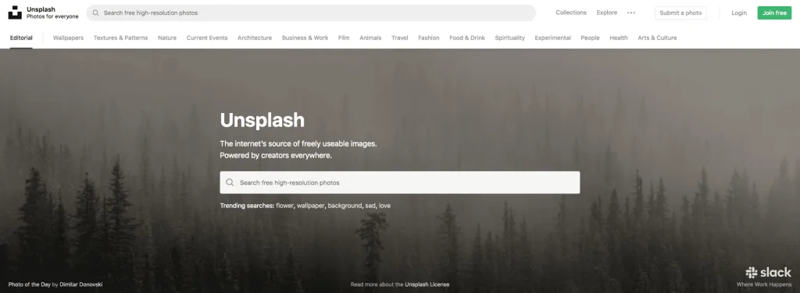
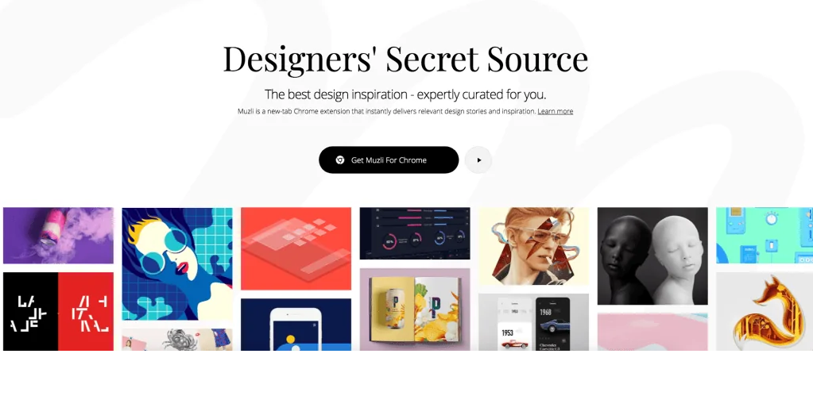
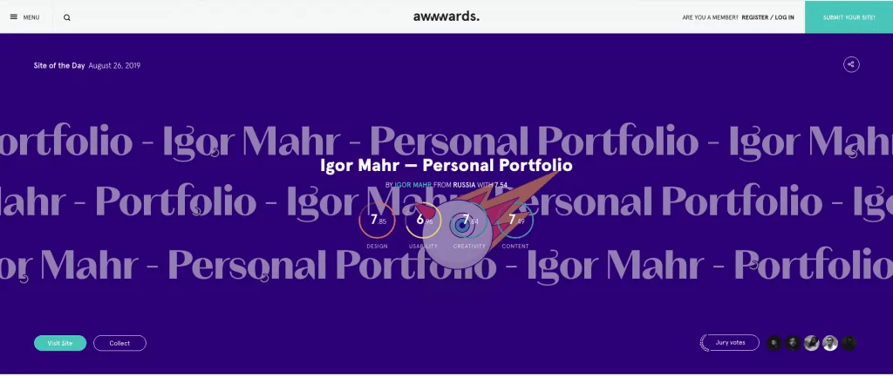

Una de las tareas diarias de las personas que trabajamos en el sector del diseño es alimentar nuestra inspiración.
En este artículo os recomendamos 10 webs de Inspiración para diseñadores al igual que veremos varias plataformas donde acceder a recursos interesantes de diseño. Páginas y recursos que nos ayudan a estar a la última en el mundo del diseño gráfico.
Una de las particularidad de este mundo es su evolución contante. Las tendencias cambian de una forma vertiginosa y debemos mantenernos al día para que nuestras propuestas estén adaptadas a la actualidad.
¿Cuánto tiempo dedicas a alimentar tu inspiración?
Es una tarea que en muchas ocasiones pasamos por encima pero es la base de un buen trabajo. Siempre será recomendable reservar un pequeño espacio de tiempo para nutrirnos de nuevas ideas y proyectos. Lejos de perder el tiempo estaremos apostando en agilizar nuestro proceso creativo. Nos debemos a nuestras ideas. ¡Mantente activo! Teatro, cine, libros, blogs, premios, proyectos de terceros pueden ser fuentes de inspiración diarias a las que no debes renunciar. Antes de ver las 10 webs de referencia para diseñadores, vamos a ver algunas webs que nos ofrecen recursos interesantes:
Recursos para diseñadores
El trabajo con fotografías está a la orden del día y por ello es recomendable contar con varias bibliotecas o bancos de imágenes a las que poder acudir en busca de recursos o inspiración.
Unsplash
Es el banco de imágenes gratuito por excelencia. Todas las fotos son de alta calidad y están subidas por fotógrafos de todo el mundo. Pese a que no es un fotografía hecha por ti mismo, si lo comparamos con las fotografías de stock, poemos ver que son imágenes originales, que tienen bastante realismo y se pueden adaptar muy bien a tus diseños.
Pexels
Es un banco de imágenes muy parecido al anterior. Intuitivo, gratuito y con imágenes de alta calidad.
Freepik
Freepik no es solo un banco de imágenes sino que lo podríamos definir como un banco de recursos. Incluye fotografías, ilustraciones, iconos, vectores y PSD. Esta plataforma destaca principalmente por el enorme abanico de iconos e imágenes vectoriales que ofrece. Tiene una opción gratuita y también opción Premium.
10 Webs fundamentales para cualquier diseñador
Ursula K. Le Guin decía: “Un adulto creativo es un niño que ha sobrevivido.” Las ganas de saber, conocer y descubrir de un creativo tienen que ser imparables. Nuestra curiosidad no tiene frenos. Por ello ver trabajos del resto de compañeros de nuestra comunidad es un ejercicio que hacemos de una forma diaria.
Existen muchas páginas webs de inspiración para diseñadores. Aquí te dejamos nuestras 10 páginas de inspiración:
Behance
¿Quién no conoce Behace? Es la plataforma perfecta tanto para mostrar tus trabajos como para ver las mejores piezas creativas del momento. Bucea por sus colecciones segmentadas por temáticas (Gráfico, UX/UI, Fotografía, Moda, Publicidad etc.) y encuentra proyectos increíbles. Una plataforma muy recomendable no solo en términos de inspiración, sino también de exposición personal al poder compartir tu portfolio>

Premios de Diseño
Mantenerte informado sobre los mejores proyectos de los premios más importantes en tu sector siempre será un buen punto de inspiración. Como recomendación podemos hablar de los Premios Cannes Lions, por sus múltiples categorías y la calidad de los proyectos que se presentan.
Actualidad en el mundo del diseño.
Quedarse desactualizado es un privilegio que un diseñador no puede permitirse. Tenemos que estar aferrados a la actualidad. ¿Cómo están evolucionando las tendencias de diseño? ¿Cómo ha cambiado el algoritmo de Google de cara al posicionamiento? ¿Qué redes sociales están en auge en estos momentos? Cientos de preguntas que tendremos que responder día a día. Gráffica.info Revista por excelencia de diseño gráfico. Si quieres mantenerte informado de las novedades del día a día del sector del diseño gráfico esta es tu web. Podrás encontrar información muy interesante y actualizada sobre Ilustración, Tipografía, Branding y Packaging
Brandemia
Se trata de un blog especializado en Branding e Identidad corporativa. Además de poder ver entrevistas, casos de estudio y demás, es un blog muy interesante por la cantidad de contenidos novedosos que suben en materia de identidad corporativa.
Muzli
Muzli es una extensión muy interesante que nos da contenido de diseño en relación a unos intereses que hayamos predefinidos. Una extensión de contenido visual con mucho potencial digna de explorar al máximo.
How to Design
Este es otro blog que puede resultar interesante a diseñadores. Además de publicar las grandes novedades en el mundo de diseño internacional, tiene su propia sección de Inspiración donde podremos acudir en busca de nuevas ideas.
¿Conoces más webs de inspiración para diseñadores?
¿Una red social pasada de moda? Frente a los que opinen esto, Pinterest sigue siendo una plataforma perfecta para recoger miles de ideas para tus diseños. La opción de crear tablereos personalizados donde puedes ir creando colecciones de imágenes por temáticas hacen de Pinterest un lugar perfecto donde crear tus propios mood boards.
Pearltrees
Otra herramienta muy útil en el momento de coger referencias visuales puede ser Pearltrees. Esta herramienta nos permite guardar nuestras páginas y trabajos de referencia (a modo de “pearls”) en un tablero personalizado al que luego podemos acudir para ver que elementos nos interesaban. Un lugar donde tener de una forma organizada todas las referencias creativas para nuestros proyectos.
Awwwards
Awwwards es uno de los grandes referentes en la inspiración en el sector del diseño web. Esta web recopila las mejores webs de agencias, desarrolladores y diseñadores de todo el mundo. Un punto de encuentro increíble que reúne los mejores proyectos web de la actualidad.
.webp)